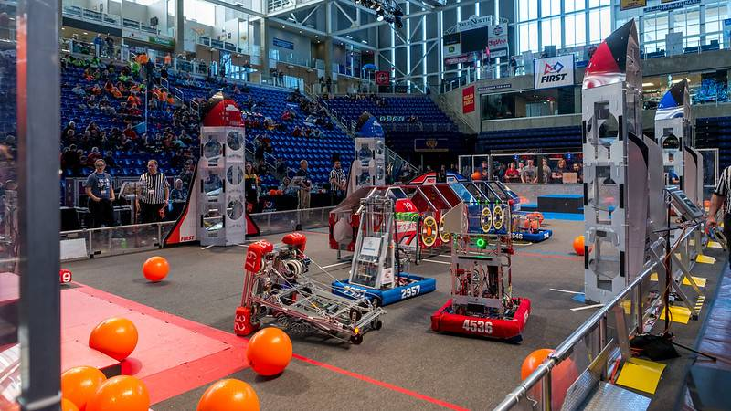

A First Robotics Competition, ou FRC, é uma competição internacional de robótica de alto nível, projetada para inspirar jovens a explorar a ciência, tecnologia, engenharia e matemática (STEM) por meio da construção de robôs.
As equipes da FRC são compostas por estudantes de escolas secundárias, mentores e voluntários. Cada temporada, as equipes têm um desafio único que envolve a criação de um robô capaz de realizar tarefas específicas em uma arena de jogo.
Além de projetar e construir robôs, a FRC promove valores como cooperação, trabalho em equipe, aprendizado prático e resolução de problemas. Os estudantes têm a oportunidade de aplicar conceitos STEM na prática e ganhar habilidades essenciais para o futuro.
A FRC não é apenas uma competição, mas também uma comunidade global de apaixonados por robótica que compartilham conhecimento, colaboram e aprendem uns com os outros.
Se você é um estudante, mentor ou entusiasta da robótica, a FRC oferece uma emocionante jornada de aprendizado e crescimento. Junte-se à FRC e faça parte desta incrível experiência!